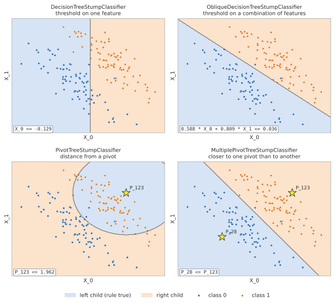
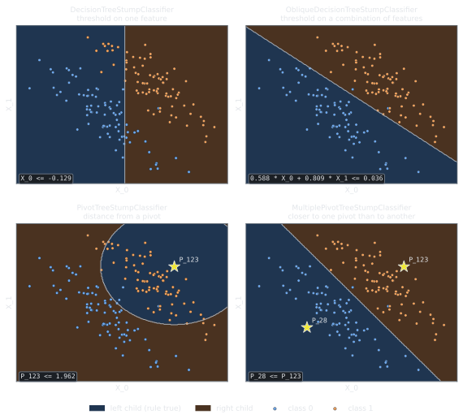

Choosing the splits: stumps#
A stump is the split of a node: it sends each instance of the node to the left or to the right
child. The base_stumps parameter of a tree lists the stumps it can use; at each node, the tree
fits one of them (or all of them, and keeps the best) on the instances of the node.
Different stumps split the same instances in different ways. Here, the root split of four of them on two classes separated by a diagonal; the shaded regions are the two children:




A threshold on one feature, on a combination of features (oblique), on the distance from a pivot (an instance of the training set, marked by a star), and the comparison of the distances from two pivots. The rule of each split is in the bottom left corner.#
Available stumps#
Stump |
Split |
Data |
Classification |
Regression |
|---|---|---|---|---|
Decision tree |
threshold on a feature, |
tabular, time series, images |
||
Oblique |
threshold on a combination of a few features, |
tabular |
||
Pivot |
distance from a pivot, an instance of the training set: |
tabular |
||
Multiple pivot |
closer to one pivot than to another: |
tabular |
||
Oblique pivot |
threshold on a combination of the distances from a few pivots |
tabular |
||
Multiple oblique pivot |
closer to one pivot than to another, among the discriminative pivots of the oblique pivot stump |
tabular |
||
Partial pivot |
distance from a partial pivot, a pivot restricted to a few features |
tabular |
||
Partial proximity |
closer to one partial pivot than to another |
tabular |
||
Shapelet |
distance from a shapelet, a subsequence of a training series |
time series |
||
Proximity |
closer to one shapelet than to another |
time series |
||
Fair |
threshold on a feature, under a fairness constraint on a sensitive attribute (Fair splits) |
tabular |
||
XGBoost |
threshold maximizing the XGBoost gain (Ensembles) |
tabular, time series, images |
The decision tree and XGBoost stumps flatten the time series and the images into one feature per value. The fair stump also works in the clustering trees.
A tree accepts only the stumps of its task: classification stumps for
RuleTreeClassifier, regression stumps for
RuleTreeRegressor and for the clustering trees, whose
stumps predict the principal components of the data. By default, the trees use the decision tree
stump of their task.
Which stump to use#
The best stump depends on the data and on the kind of rule that is easy to read for whoever uses the tree. A starting point:
If |
Try |
|---|---|
the features are meaningful one by one, and the rules should be as simple as possible |
the decision tree stump (the default): |
the classes are separated by combinations of features (e.g. along a diagonal) |
the oblique stumps, on standardized data (Oblique stumps) |
the instances are better described by their similarity to some examples than by single features, e.g. many features or embeddings |
the pivot stumps (Pivot stumps); the multiple pivot stumps to compare two examples; the partial pivot stumps for shorter rules |
time series whose pattern can occur at any time |
the shapelet stumps (Tabular data, time series and images) |
time series whose classes differ by the shape of the pattern (a bump against a dip) |
the proximity stumps (Tabular data, time series and images) |
time series aligned in time, or images, where single values matter |
the decision tree stump, on one feature per time step or pixel |
images or texts, by similarity |
the pivot stumps on embeddings (e.g. from a pre-trained network) given as tabular data |
the splits must respect a sensitive attribute |
the fair stump, in regression and clustering trees (Fair splits) |
several of the above may work |
all of them, with |
Parameters of the stumps#
The stumps are scikit-learn estimators: their parameters are set in the constructor and shown by
get_params. The decision tree stumps take the parameters of a scikit-learn decision tree that
make sense for a single split:
from sklearn.datasets import load_breast_cancer
from RuleTree import RuleTreeClassifier
from RuleTree.stumps.classification import DecisionTreeStumpClassifier
data = load_breast_cancer()
X, y = data.data, data.target
stump = DecisionTreeStumpClassifier(criterion="entropy", min_samples_leaf=20, class_weight="balanced")
model = RuleTreeClassifier(max_depth=3, base_stumps=stump, random_state=0).fit(X, y)
print(stump.get_params())
print("leaves:", len(model.get_leaf_nodes()))
{'class_weight': 'balanced', 'criterion': 'entropy', 'max_features': None, 'min_impurity_decrease': 0.0, 'min_samples_leaf': 20, 'min_weight_fraction_leaf': 0.0, 'random_state': None}
leaves: 7
Note
The stump passed to the tree is a template: the tree fits a copy of it at each node, so
stump itself stays unfitted.
Combining stumps#
base_stumps can be:
a stump;
a list of stumps;
a list of tuples
(probability, stump), with probabilities summing to 1;a list of tuples
(probability, stump, data_types), to use a stump only on some data types (see Tabular data, time series and images).
With stump_selection="random" (the default), each node is split by a stump drawn according
to the probabilities (equal, for a list of stumps). With stump_selection="best", all the
stumps are fitted and the one with the highest gain is kept:
from collections import Counter
from RuleTree.stumps.classification import PivotTreeStumpClassifier
model = RuleTreeClassifier(max_depth=3, stump_selection="best", random_state=0,
base_stumps=[DecisionTreeStumpClassifier(), PivotTreeStumpClassifier()])
model.fit(X, y)
splits = Counter(type(node.stump).__name__ for node in model.get_predicates().values())
print(sorted(splits.items()))
[('DecisionTreeStumpClassifier', 6), ('PivotTreeStumpClassifier', 1)]
A random choice gives more diverse trees, e.g. for ensembles; random_state makes the choice
reproducible:
model = RuleTreeClassifier(max_depth=3, random_state=0,
base_stumps=[(0.7, DecisionTreeStumpClassifier()), (0.3, PivotTreeStumpClassifier())])
model.fit(X, y)
splits = Counter(type(node.stump).__name__ for node in model.get_predicates().values())
print(sorted(splits.items()))
[('DecisionTreeStumpClassifier', 4), ('PivotTreeStumpClassifier', 3)]
The random_state of the tree is also given to the stumps whose random_state is None, so
that they do not break ties between equally good features at random.
Pivot stumps#
A pivot stump splits on the distance from an instance of the training set, the pivot: the
instances closer than a threshold go left. The candidate pivots of a node are, for each class,
its medoid (descriptive pivot) and the instance whose distance best separates the classes
(discriminative pivot). Distances are computed on the standardized numerical features, with any
metric of sklearn.metrics.pairwise_distances:
pivot_tree = RuleTreeClassifier(max_depth=2, random_state=0,
base_stumps=PivotTreeStumpClassifier(distance_measure="cosine"))
pivot_tree.fit(X, y)
pivot_tree.print_rules(pivot_tree.get_rules())
print("pivot of the root:", pivot_tree.root.stump.feature_original)
|--- P_461 <= 1.052
| |--- P_368 <= 1.011
| | output: 0
| |--- P_368 > 1.011
| | output: 0
|--- P_461 > 1.052
| |--- P_199 <= 0.546
| | output: 0
| |--- P_199 > 0.546
| | output: 1
pivot of the root: 461
In the rules, P_<i> is the distance from the training instance i. The distance matrix of
the training set is computed once and cached in the tree (see Growing and updating trees).
get_pivots returns the pivots of a node: the descriptive and discriminative ones, all the
candidates and the one used by the split. For the whole tree:
for node_id, node in pivot_tree.get_predicates().items():
print(node_id, node.stump.get_pivots())
R {'descriptives': [167, 249], 'discriminatives': [461, 140], 'candidates': [167, 249, 461, 140], 'used': 461}
Rl {'descriptives': [167, 421], 'discriminatives': [368, 191], 'candidates': [167, 421, 368, 191], 'used': 368}
Rr {'descriptives': [40, 415], 'discriminatives': [199, 71], 'candidates': [40, 415, 199, 71], 'used': 199}
Three variants use the same candidate pivots in other ways:
MultiplePivotTreeStumpClassifiercompares two pivots of different classes:P_a <= P_bsends left the instances closer to the training instanceathan tob, with no threshold;ObliquePivotTreeStumpClassifiersplits on a linear combination of the distances from a few pivots (see Oblique stumps), and finds the discriminative pivots of each class with an oblique split on the distances;MultipleObliquePivotTreeStumpClassifiercompares two pivots, as the first one, with the discriminative pivots of the second one.
from RuleTree.stumps.classification import (MultipleObliquePivotTreeStumpClassifier, MultiplePivotTreeStumpClassifier,
ObliquePivotTreeStumpClassifier)
for stump in [MultiplePivotTreeStumpClassifier(), ObliquePivotTreeStumpClassifier(),
MultipleObliquePivotTreeStumpClassifier()]:
tree = RuleTreeClassifier(max_depth=2, random_state=0, base_stumps=stump).fit(X, y)
print(f"{type(stump).__name__}: {tree.root.stump.get_rule()['textual_rule']}, accuracy {tree.score(X, y):.3f}")
MultiplePivotTreeStumpClassifier: P_441 <= P_480, accuracy 0.930
ObliquePivotTreeStumpClassifier: 0.633 * P_480 - 0.443 * P_461 <= -5.801, accuracy 0.954
MultipleObliquePivotTreeStumpClassifier: P_441 <= P_480, accuracy 0.933
Their get_pivots returns all the pivots used by the split in used.
Oblique stumps#
An oblique stump splits on a linear combination of a few features, e.g.
0.95 * worst perimeter + 0.31 * worst smoothness <= 0.13: a hyperplane that is not parallel to
the axes, which can separate with one split classes that an axis-parallel tree needs many splits
for. The directions are chosen at each node in one of two ways (oblique_split_type):
"householder"(the default): the axes reflected by the Householder reflection that maps the principal component of the node onto an axis; each direction combines at mostmax_oblique_featuresfeatures;"bivariate":n_orientationsrotations of the pair of features that best splits the node.
Important
The combinations use the features as they are, so the data should be on comparable scales, e.g. standardized as below.
from sklearn.preprocessing import StandardScaler
from RuleTree.stumps.classification import ObliqueDecisionTreeStumpClassifier
X_scaled = StandardScaler().fit_transform(X) # the combinations use the features as they are
oblique_tree = RuleTreeClassifier(max_depth=2, random_state=0,
base_stumps=ObliqueDecisionTreeStumpClassifier("bivariate"))
oblique_tree.fit(X_scaled, y)
oblique_tree.print_rules(oblique_tree.get_rules(columns_names=list(data.feature_names)))
print("accuracy:", round(oblique_tree.score(X_scaled, y), 3))
print("axis-parallel:", round(RuleTreeClassifier(max_depth=2, random_state=0).fit(X_scaled, y).score(X_scaled, y), 3))
|--- 0.951 * worst perimeter + 0.309 * worst smoothness <= 0.127
| |--- 0.951 * area error + 0.309 * worst concave points <= -0.132
| | output: 1
| |--- 0.951 * area error + 0.309 * worst concave points > -0.132
| | output: 1
|--- 0.951 * worst perimeter + 0.309 * worst smoothness > 0.127
| |--- 0.809 * worst radius + 0.588 * worst concave points <= 0.129
| | output: 1
| |--- 0.809 * worst radius + 0.588 * worst concave points > 0.129
| | output: 0
accuracy: 0.968
axis-parallel: 0.942
The stump stores the columns and the coefficients of its combination in feature_original and
coefficients. The regression stump,
ObliqueDecisionTreeStumpRegressor,
can also be used by the clustering trees.
Fair splits#
FairTreeStumpRegressor chooses the
split under a constraint on a sensitive attribute, a column of the data that the splits never
use:
penalty="balance": the groups of the sensitive attribute should be represented in each child as in the node;penalty="mfc": the distribution of the groups should be close toideal_distribution;penalty="privacy": the children should satisfy k-anonymity, l-diversity and t-closeness.
As a regression stump, it can be used by the clustering trees to find fair clusters. Here the sensitive attribute (column 2) is strongly related to the clusters:
import numpy as np
from sklearn.datasets import make_blobs
from RuleTree import RuleTreeCluster
from RuleTree.stumps.regression import FairTreeStumpRegressor
from RuleTree.utils.fairness_metrics import balance_metric
points, groups = make_blobs(n_samples=300, centers=4, cluster_std=0.8, random_state=1)
rng = np.random.default_rng(0)
sensitive = np.where(rng.random(300) < 0.8, groups % 2, 1 - groups % 2)
data = np.column_stack([points, sensitive]).astype(float)
for name, stump in [("standard", None),
("fair", FairTreeStumpRegressor(penalty="balance", sensible_attribute=2, n_jobs=1))]:
clustering = RuleTreeCluster(max_depth=2, random_state=0, base_stumps=stump)
labels = clustering.fit_predict(data)
print(f"{name}: {len(set(labels.tolist()))} clusters, balance {balance_metric(labels, sensitive):.2f}")
standard: 4 clusters, balance 0.00
fair: 4 clusters, balance 0.44
The balance is 1 when every cluster has the same proportion of each group as the whole data set.
The fair stump supports a single target, so it splits one principal component at a time: it is
used with component_split="best" (the default), not with "joint".
Other stumps#
PartialPivotTreeStumpClassifierrestricts the pivots to a few features, so that the rules are shorter.PartialProximityTreeStumpClassifiercompares two of them: the instances closer to the first one go left.The shapelet and proximity stumps work on time series: see Tabular data, time series and images.
The shapelet, proximity and partial pivot stumps need the
shapeletsextra (see Getting started).XGBoostStumpRegressoris the stump of the XGBoost trees: see Ensembles.New stumps can be written by combining a transformer and a splitter: see Extending the library.